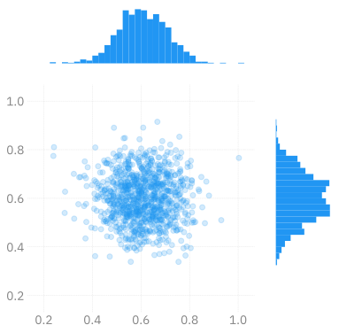
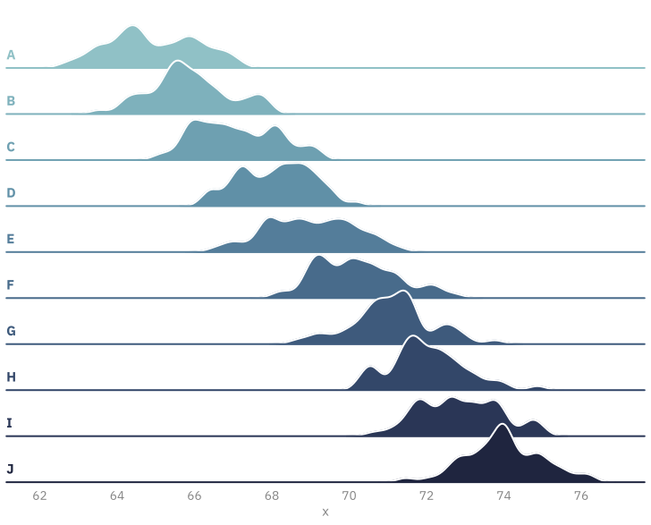

import warnings
from ambivalent import STYLES
import matplotlib.pyplot as plt
import numpy as np
warnings.filterwarnings("ignore")
# Fixing random state for reproducibility
np.random.seed(19680801)
plt.style.use(STYLES['ambivalent'])
# some random data
x = np.random.randn(1000)
y = np.random.randn(1000)
def scatter_hist(x, y, ax, ax_histx, ax_histy, alpha: float = 0.4):
# no labels
ax_histx.tick_params(axis="x", labelbottom=False)
ax_histy.tick_params(axis="y", labelleft=False)
# the scatter plot:
ax.scatter(x, y, alpha=alpha)
# now determine nice limits by hand:
binwidth = 0.25
xymax = max(np.max(np.abs(x)), np.max(np.abs(y)))
lim = (int(xymax/binwidth) + 1) * binwidth
bins = np.arange(-lim, lim + binwidth, binwidth)
ax_histx.hist(x, bins=bins)
ax_histy.hist(y, bins=bins, orientation='horizontal')ambivalent
opinionatedambivalent
Clean, simple style for Matplotlib figures.
Transparent backgrounds with grey text that are
{light, dark}-mode independent.
Examples1


More Examples
InferenceData

l2hmc-qcd NotebookRidgeplot

Execution
2D Density
Make the plot
# Start with a square Figure.
fig = plt.figure(figsize=(6, 6))
# Add a gridspec with two rows and two columns and a ratio of 1 to 4 between
# the size of the marginal axes and the main axes in both directions.
# Also adjust the subplot parameters for a square plot.
gs = fig.add_gridspec(2, 2, width_ratios=(4, 1), height_ratios=(1, 4),
left=0.1, right=0.9, bottom=0.1, top=0.9,
wspace=0.15, hspace=0.15)
# Create the Axes.
ax = fig.add_subplot(gs[1, 0])
ax_histx = fig.add_subplot(gs[0, 0], sharex=ax)
ax_histy = fig.add_subplot(gs[1, 1], sharey=ax)
_ = fig.axes[1].grid(False)
_ = fig.axes[2].set_xticklabels([])
_ = fig.axes[1].set_yticklabels([])
_ = fig.axes[2].grid(False)
_ = fig.axes[0].set_xticklabels(fig.axes[0].get_xticklabels())
_ = fig.axes[0].set_yticklabels(fig.axes[0].get_yticklabels())
# Draw the scatter plot and marginals.
_ = scatter_hist(x, y, ax, ax_histx, ax_histy)
_ = plt.show()
Last Updated: 12/28/2023 @ 19:15:03

Footnotes
Examples from Matplotlib Examples↩︎
Citation
BibTeX citation:
@online{foreman2023,
author = {Foreman, Sam},
title = {`Ambivalent`},
date = {2023-12-28},
url = {https://saforem2.github.io/ambivalent},
langid = {en}
}
For attribution, please cite this work as:
Foreman, Sam. 2023. “`Ambivalent`.” December 28, 2023. https://saforem2.github.io/ambivalent.